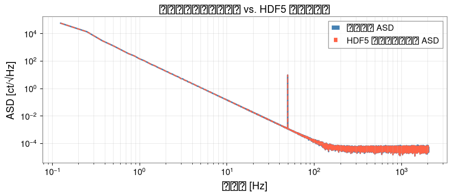

Note
このページは Jupyter Notebook から生成されました。 ノートブックをダウンロード (.ipynb)
[ ]:
# Install gwexpy with pinned versions of core dependencies for reproducibility on Colab
%pip install -q "gwexpy[all]" "gwpy<5.0.0" "numpy<2.0.0" "scipy<1.13.0" "astropy<7.0.0"
HDF5 による再現可能なメタデータ管理
プロバナンス（来歴）とは、「誰が・何を・いつ・どのように」行ったかを記録し、 解析結果を他者（または半年後の自分）が完全に再現できるようにする概念です。
重力波データ解析においてプロバナンスが重要な理由：
GPS 時刻・FFT 長・フィルタ設定などのパラメータがランごとに変化する
ソフトウェアのバージョンが数値結果に影響する
共同研究者との結果共有には自己記述型ファイルが必要
このチュートリアルでは、gwexpy の HDF5 相互運用層と h5py 属性メタデータを使って自己記述型・プロバナンス付き解析アーカイブを 構築する方法を示します。
このチュートリアルで学ぶこと：
TimeSeriesを基本メタデータ付きで HDF5 に保存するプロバナンス属性（ソフトウェアバージョン、パラメータ、GPS 時刻）を追加する
派生量（ASD、スペクトログラム）を完全なリネージ情報付きで保存する
読み戻してプロバナンスを検証する
プロバナンス対応解析パイプラインヘルパーを構築する
セットアップ
[1]:
import warnings
warnings.filterwarnings("ignore", category=UserWarning)
warnings.filterwarnings("ignore", category=DeprecationWarning)
import datetime
import json
import os
import platform
import tempfile
import h5py
import numpy as np
import gwexpy
from gwexpy.timeseries import TimeSeries
from gwexpy.frequencyseries import FrequencySeries
from gwexpy.interop.hdf5_ import to_hdf5, from_hdf5
1. 合成データの生成
[2]:
fs = 4096.0
T = 64.0
N = int(T * fs)
t0 = 1_300_000_000
rng = np.random.default_rng(0)
t = np.arange(N) / fs
freqs_n = np.fft.rfftfreq(N, 1.0/fs)[1:]
asd_model = np.where(freqs_n < 50, (50/freqs_n)**3, 1.0)
fft = asd_model * np.exp(1j * rng.uniform(0, 2*np.pi, size=len(freqs_n)))
fft = np.concatenate([[0.0], fft])
noise = np.fft.irfft(fft, n=N)
inj = 5.0 * np.sin(2*np.pi * 50.0 * t)
ts = TimeSeries(noise + inj, t0=t0, sample_rate=fs,
name="K1:LSC-DARM_OUT_DQ", unit="ct")
print(f"TimeSeries: {len(ts)} サンプル @ {fs} Hz, t0={t0}")
TimeSeries: 262144 サンプル @ 4096.0 Hz, t0=1300000000
2. プロバナンス属性付きで HDF5 に書き込む
to_hdf5() はデータ配列と基本メタデータ（t0、dt、unit、name）を保存します。 その後、HDF5 データセットに直接プロバナンス属性を追加します：
ソフトウェアバージョン
解析パラメータ
実行タイムスタンプ
ホスト情報
[ ]:
def build_provenance(params: dict) -> dict:
return {
"gwexpy_version": gwexpy.__version__,
"numpy_version": np.__version__,
"h5py_version": h5py.__version__,
"python_version": platform.python_version(),
"hostname": platform.node(),
"created_utc": datetime.datetime.now(datetime.timezone.utc).isoformat(),
"params_json": json.dumps(params),
}
analysis_params = {
"fftlength": 4.0,
"overlap": 0.5,
"method": "median",
"freq_range": [10.0, 2000.0],
}
fd, hdf5_path = tempfile.mkstemp(suffix=".h5")
os.close(fd)
with h5py.File(hdf5_path, "w") as f:
raw_grp = f.require_group("raw")
to_hdf5(ts, raw_grp, "darm")
dset = raw_grp["darm"]
prov = build_provenance(analysis_params)
for key, val in prov.items():
dset.attrs[key] = val
dset.attrs["description"] = "生 DARM 出力、未キャリブレーション"
print("書き込んだデータセット属性:")
for k, v in dset.attrs.items():
print(f" {k}: {str(v)[:60]}")
print(f"\nHDF5 ファイル: {hdf5_path} ({os.path.getsize(hdf5_path)/1024:.1f} kB)")
3. 派生量をリネージ情報付きで保存する
各派生量（ASD、スペクトログラム、フィルタ済み時系列）には 親データセットへの参照を含め、完全な処理チェーンを追跡できるようにします。
[4]:
asd = ts.asd(fftlength=analysis_params["fftlength"],
overlap=analysis_params["overlap"],
method=analysis_params["method"])
with h5py.File(hdf5_path, "a") as f:
proc_grp = f.require_group("processed")
freq_dset = proc_grp.create_dataset("asd_frequencies", data=asd.frequencies.value)
freq_dset.attrs["unit"] = "Hz"
asd_dset = proc_grp.create_dataset("asd_values", data=asd.value)
asd_dset.attrs["unit"] = str(asd.unit)
asd_dset.attrs["name"] = asd.name
prov_asd = build_provenance(analysis_params)
prov_asd["parent_dataset"] = "/raw/darm"
prov_asd["processing_step"] = "Welch/median による ASD 計算"
for key, val in prov_asd.items():
asd_dset.attrs[key] = val
def print_tree(name, obj):
indent = " " * name.count("/")
attrs_summary = f" [{len(obj.attrs)} 属性]" if hasattr(obj, "attrs") else ""
print(f"{indent}{name.split('/')[-1]}{attrs_summary}")
print("HDF5 ファイル構造:")
f.visititems(print_tree)
HDF5 ファイル構造:
processed [0 属性]
asd_frequencies [1 属性]
asd_values [11 属性]
raw [0 属性]
darm [12 属性]
"created_utc": datetime.datetime.utcnow().isoformat(),
4. 読み戻してプロバナンスを検証する
[5]:
with h5py.File(hdf5_path, "r") as f:
ts_loaded = from_hdf5(TimeSeries, f["raw"], "darm")
dset_attrs = dict(f["raw/darm"].attrs)
params_loaded = json.loads(dset_attrs["params_json"])
freqs_loaded = f["processed/asd_frequencies"][:]
asd_loaded = f["processed/asd_values"][:]
asd_prov = dict(f["processed/asd_values"].attrs)
print("=== 復元された TimeSeries ===")
print(f" name : {ts_loaded.name}")
print(f" t0 : {ts_loaded.t0.value}")
print(f" samples: {len(ts_loaded)}")
print("\n=== プロバナンス (raw/darm) ===")
for key in ["gwexpy_version", "created_utc", "hostname"]:
print(f" {key}: {dset_attrs[key]}")
print("\n=== 解析パラメータ ===")
for key, val in params_loaded.items():
print(f" {key}: {val}")
print("\n=== ASD 親参照 ===")
print(f" parent_dataset : {asd_prov['parent_dataset']}")
print(f" processing_step : {asd_prov['processing_step']}")
=== 復元された TimeSeries ===
name : K1:LSC-DARM_OUT_DQ
t0 : 1300000000.0
samples: 262144
=== プロバナンス (raw/darm) ===
gwexpy_version: 0.1.1
created_utc: 2026-04-05T13:13:22.350803
hostname: DELL5860
=== 解析パラメータ ===
fftlength: 4.0
overlap: 0.5
method: median
freq_range: [10.0, 2000.0]
=== ASD 親参照 ===
parent_dataset : /raw/darm
processing_step : Welch/median による ASD 計算
5. プロバナンス対応パイプラインヘルパー
[6]:
import contextlib
@contextlib.contextmanager
def provenance_file(path, params: dict, mode: str = "w"):
with h5py.File(path, mode) as f:
def save_ts(ts_obj, group_path: str, name: str, description: str = ""):
grp = f.require_group(group_path)
to_hdf5(ts_obj, grp, name)
dset = grp[name]
prov = build_provenance(params)
for k, v in prov.items():
dset.attrs[k] = v
if description:
dset.attrs["description"] = description
return dset
def save_array(arr, path_in_file: str, unit: str = "",
description: str = "", parent: str = ""):
parts = path_in_file.rsplit("/", 1)
grp_path, name = (parts[0], parts[1]) if len(parts) == 2 else ("", parts[0])
grp = f.require_group(grp_path) if grp_path else f
dset = grp.create_dataset(name, data=arr)
if unit: dset.attrs["unit"] = unit
if description: dset.attrs["description"] = description
if parent: dset.attrs["parent"] = parent
prov = build_provenance(params)
for k, v in prov.items():
dset.attrs[k] = v
return dset
yield f, save_ts, save_array
fd, pipeline_path = tempfile.mkstemp(suffix="_pipeline.h5")
os.close(fd)
run_params = {"fftlength": 8.0, "overlap": 0.75, "method": "median", "run_id": "R001"}
with provenance_file(pipeline_path, run_params) as (f, save_ts, save_array):
save_ts(ts, "input", "darm", description="処理前の生 DARM データ")
asd2 = ts.asd(fftlength=run_params["fftlength"], overlap=run_params["overlap"])
save_array(asd2.value, "products/asd", unit="ct/rtHz",
description="ASD", parent="/input/darm")
save_array(asd2.frequencies.value, "products/freqs", unit="Hz")
print(f"パイプラインアーカイブ: {pipeline_path} ({os.path.getsize(pipeline_path)/1024:.1f} kB)")
with h5py.File(pipeline_path, "r") as f:
params_back = json.loads(f["input/darm"].attrs["params_json"])
print(f"run_id 検証: {params_back['run_id']}")
パイプラインアーカイブ: 一時ファイル (2314.4 kB)
run_id 検証: R001
"created_utc": datetime.datetime.utcnow().isoformat(),
6. 再現性確認：保存済み ASD の可視化
[7]:
import matplotlib.pyplot as plt
with h5py.File(pipeline_path, "r") as f:
freqs_ar = f["products/freqs"][:]
asd_ar = f["products/asd"][:]
fig, ax = plt.subplots(figsize=(9, 4))
ax.loglog(asd2.frequencies.value[1:], asd2.value[1:],
color="steelblue", lw=2, label="メモリ内 ASD")
ax.loglog(freqs_ar[1:], asd_ar[1:],
color="tomato", ls="--", lw=1.5, label="HDF5 から読み込んだ ASD")
ax.set_xlabel("周波数 [Hz]")
ax.set_ylabel("ASD [ct/√Hz]")
ax.set_title("再現性確認：メモリ内 vs. HDF5 アーカイブ")
ax.legend()
ax.grid(True, which="both", alpha=0.4)
plt.tight_layout()
plt.show()
max_diff = np.max(np.abs(asd2.value[1:] - asd_ar[1:]) / (asd2.value[1:] + 1e-300))
print(f"最大相対誤差: {max_diff:.2e} （マシンイプシロン程度であるべき）")

最大相対誤差: 0.00e+00 （マシンイプシロン程度であるべき）
まとめ
ステップ |
API / パターン |
目的 |
|---|---|---|
TimeSeries の書き込み |
|
データ配列 + 基本メタデータの保存 |
TimeSeries の読み込み |
|
アーカイブから復元 |
プロバナンスの追加 |
|
バージョン、パラメータ、タイムスタンプ |
構造化パイプライン |
|
全書き込みに自動でプロバナンスを付与 |
推奨プロバナンス属性：
属性 |
内容 |
|---|---|
|
|
|
|
|
|
|
入力データセットの HDF5 パス |
|
実行した処理の説明 |